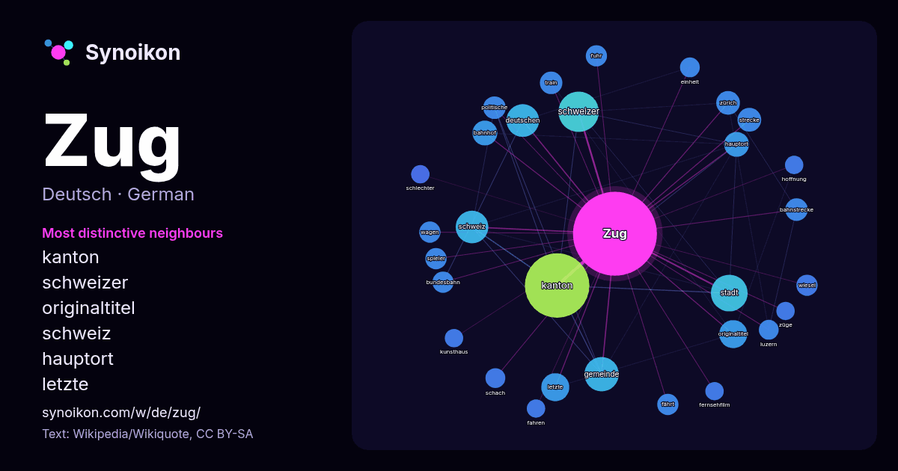

Deutsch · Liste der Wörter des Tages
Zug
“train” · Die Wörter in seinem Umfeld aus 815 Vorkommen in Wikipedia, Wikiquote.

Typischste Nachbarn
- kanton 52×
- schweizer 21×
- originaltitel 14×
- schweiz 13×
- hauptort 11×
- letzte 10×
- train 9.9×
- wiesel 9.0×
- bundesbahn 8.8×
- zürich 8.8×
- fährt 8.5×
- bahnhof 8.2×
- bahnstrecke 8.0×
- schach 7.8×
- fuhr 7.8×
- luzern 7.6×
- wagen 7.5×
- strecke 7.5×
- gemeinde 7.5×
- politische 7.2×
× = wie viel häufiger als in allgemeinem Wikipedia-Text.
Häufigste Nachbarn
- kanton 74
- schweizer 29
- stadt 24
- gemeinde 21
- deutschen 19
- schweiz 19
- letzte 14
- originaltitel 14
- bahnhof 11
- hauptort 11
- deutscher 10
- strecke 10
- zürich 10
- bahnstrecke 9
- personen 9
- politische 9
- train 9
- bundesbahn 8
- deutschland 8
- fährt 8
Im Kontext
- Zug steht für: Wesensmerkmal einer Person, siehe Charaktertypen Gebirgszug, alpine Landschaftsformation Höhenzug, lang gestreckte Landschaftsformation Wikipedia snippets · Zug
- Zug um Zug ist ein Brettspiel des britischen Spieleautors Alan R. Moon, bei dem es um die Nutzung von Eisenbahnstrecken in den USA geht. Die englische Wikipedia snippets · Zug um Zug (Spiel)
- Tugium) ist eine Einwohnergemeinde und der Hauptort des Schweizer Kantons Zug. Zug liegt auf 425 m ü. M. am Zugersee, eingebettet zwischen dem nordöstlichen Wikipedia snippets · Zug (Stadt)
- 47.16488.548Koordinaten: 47° 10′ N, 8° 33′ O; CH1903: 684113 / 224354 Zug (Kürzel ZG; in der schweizerdeutschen Ortsmundart Zùùg , französisch Zoug, italienisch Wikipedia snippets · Kanton Zug
- Das Zuger Attentat wurde am 27. September 2001 während einer Sitzung des Kantonsrates im Parlamentsgebäude in Zug (Kanton Zug, Schweiz) verübt. Der Attentäter Wikipedia snippets · Zuger Attentat
- Zug um Zug steht für: Zug um Zug (Recht), Begriff aus dem deutschen Schuldrecht Zug um Zug (Computerspiel), Zugsimulation von Sierra Entertainment (1999) Wikipedia snippets · Zug um Zug
- Ein Leistungsaustausch Zug um Zug bedeutet im deutschen Schuldrecht, dass der eine Teil nur dann zu leisten hat, wenn auch der andere Teil zur gleichen Wikipedia snippets · Zug um Zug (Recht)
- (TS) geführt und als Transitverkehr betrachtet. Zu Beginn benötigte der Zug für die Fahrt zwischen beiden Endpunkten sieben Stunden und 20 Minuten, in Wikipedia snippets · Mediolanum (Zug)
Weitere Wörter
- Arbeit
- Brücke
- Essen
- Familie
- Geld
- Geschichte
- Gesundheit
- Gold
- Gott
- Kunst
- Leben
- Macht
- Natur
- Tod
- Wahrheit
- Wasser
- Wissenschaft
Vorberechnet am 2026-10-09 mit Standardeinstellungen (±5 Wörter, mittlerer Korpus). Die interaktive Karte kann mit Live-Daten aktualisieren.
Maschinell übersetzte Oberfläche; Korrekturen willkommen.